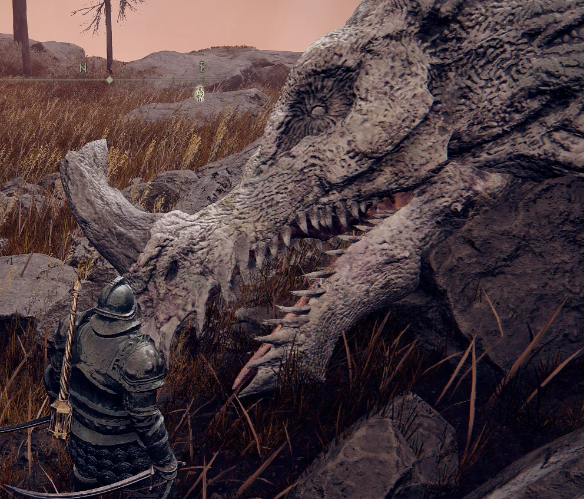

Dragões, geralmente, são criaturas que demonstram alto nível de agressividade em relação aos humanos, comportamento criado a partir da extensiva história de caça a esses seres, seja por sua pele resistente a fogo ou seus dentes extremamente resistentes.
Com isso em mente, trago esse guia simples e conciso de como se ganhar a confiança de seu primeiro dragão.

O autor desse texto não se responsabiliza por nenhuma parte do corpo mastigada, queimada, derretida, entre outras possiveis eventualidades.